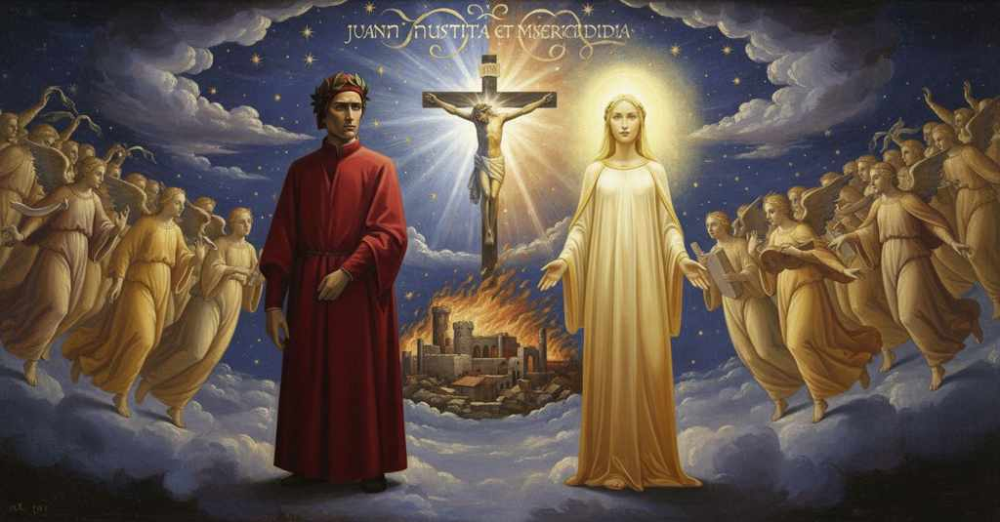

Paradiso — Canto 7

Beatrice answers Dante's unspoken questions by explaining the divine justice behind the Crucifixion and the necessity of the Incarnation for humanity's redemption and eventual resurrection. ユスティニアヌスが去った後、ベアトリーチェはダンテの疑問を察し、キリストの受難による人間の贖罪という神学的な謎を解き明かす。
1
«Osanna, sanctus Deus sabaòth,
«Hosanna, sanctus Deus sabaoth,
«オザンナ、聖なる万軍の神サバオトよ、
2
superillustrans claritate tua
super-illuminating with Your brightness
汝の輝きもて、ひときわに照らしたまえ
3
felices ignes horum malacòth!».
the happy fires of these kingdoms!».
この王国（マラコト）の幸いな炎らを！»。
4
Così, volgendosi a la nota sua,
Thus, turning to its own melody,
このように、自らの調べに合わせつつ、
5
fu viso a me cantare essa sustanza,
it seemed to me that substance sang,
その実体は歌っていると私には見え、
6
sopra la qual doppio lume s’addua;
over which a double light is twinned;
その上には二重の光が一つになっていた。
7
ed essa e l’altre mossero a sua danza,
and it and the others moved to their dance,
そして、その魂と他の魂たちは舞踏に移り、
8
e quasi velocissime faville
and like the swiftest of sparks
さながら極めて速い火花のように
9
mi si velar di sùbita distanza.
they veiled themselves from me by sudden distance.
たちまちの距離に私から隠れてしまった。
10
Io dubitava e dicea ‘Dille, dille!’
I was in doubt and said 'Tell her, tell her!'
私は疑念を抱き、言った「彼女に言え、彼女に言え！」と
11
fra me, ‘dille’ dicea, ‘a la mia donna
within myself, 'tell her,' I said, 'my lady
心の中で、「言え」と私は言った、「我が貴婦人に
12
che mi diseta con le dolci stille’.
who quenches my thirst with her sweet drops.'
その甘美な滴で私の渇きを癒してくださる方に」と。
13
Ma quella reverenza che s’indonna
But that reverence that makes itself master
しかし、私を完全に支配するあの敬意が、
14
di tutto me, pur per Be e per ice,
of all of me, just for a 'Be' and an 'ice',
ただ「ベ」と「イーチェ」というだけで、
15
mi richinava come l’uom ch’assonna.
made me bow my head like a man who dozes off.
私を、うたた寝する者のようにうなだれさせた。
16
Poco sofferse me cotal Beatrice
Beatrice suffered me thus for but a little
ベアトリーチェは、そのような私を長くは許さず、
17
e cominciò, raggiandomi d’un riso
and began, beaming on me with a smile
微笑みで私を照らしながら、話し始めた。
18
tal, che nel foco faria l’uom felice:
such, that in the fire it would make a man happy:
それは、火の中にいる者をも幸福にするほどのものであった。
19
«Secondo mio infallibile avviso,
«According to my unerring view,
「私の誤りなき見解によれば、
20
come giusta vendetta giustamente
how a just vengeance was justly
いかにして正当な復讐が正当に
21
punita fosse, t’ha in pensier miso;
punished, has put you in thought;
罰せられたのか、それがあなたを思案に暮れさせています。
22
ma io ti solverò tosto la mente;
but I will quickly solve your mind;
しかし、私はすぐにあなたの心を解きほぐしましょう。
23
e tu ascolta, ché le mie parole
and you listen, for my words
そして聞きなさい、私の言葉は
24
di gran sentenza ti faran presente.
will make you a gift of great doctrine.
大いなる教えをあなたに授けるでしょう。
25
Per non soffrire a la virtù che vole
For not enduring, for his own good, a rein
己の益のために自制を望む徳に
26
freno a suo prode, quell’ uom che non nacque,
on the power that wills, that man who was not born,
耐えなかったために、生まれざりし者（アダム）は、
27
dannando sé, dannò tutta sua prole;
damning himself, damned all his progeny;
自らを罪に定め、そのすべての子孫を罪に定めました。
28
onde l’umana specie inferma giacque
whence the human species lay infirm
それゆえに人類は病めるままに横たわり
29
giù per secoli molti in grande errore,
down here for many centuries in great error,
幾世紀もの間、大いなる誤謬の中にありました、
30
fin ch’al Verbo di Dio discender piacque
til it pleased the Word of God to descend
ついに神の御言葉が降臨することを望まれるまで。
31
u’ la natura, che dal suo fattore
where the nature, which from its maker
そこにおいて、その創造主から
32
s’era allungata, unì a sé in persona
had distanced itself, he united to himself in person
遠ざかっていた本性を、自らの位格のうちに一つにしたのです、
33
con l’atto sol del suo etterno amore.
with the sole act of his eternal love.
その永遠の愛のただ一つの行いによって。
34
Or drizza il viso a quel ch’or si ragiona:
Now turn your face to what is now discussed:
さあ、今語られることに顔を向けなさい。
35
questa natura al suo fattore unita,
this nature, to its maker united,
その創造主と一つになったこの本性は、
36
qual fu creata, fu sincera e buona;
as it was created, was sincere and good;
創造された時には、純粋で善きものでした。
37
ma per sé stessa pur fu ella sbandita
but by itself it was then banished
しかし、それ自体によって楽園から
38
di paradiso, però che si torse
from paradise, because it turned aside
追放されたのです、なぜなら真理の道とその生命から
39
da via di verità e da sua vita.
from the way of truth and from its life.
逸れてしまったからです。
40
La pena dunque che la croce porse
The penalty, then, that the cross offered,
それゆえに十字架が与えた罰は、
41
s’a la natura assunta si misura,
if measured against the assumed nature,
もし取られた本性に対して量られるならば、
42
nulla già mai sì giustamente morse;
nothing ever so justly bit;
かくも正当に責めさいなんだものは決してありませんでした。
43
e così nulla fu di tanta ingiura,
and likewise nothing was of such great injury,
そしてまた、かくも大いなる不正はなかったのです、
44
guardando a la persona che sofferse,
looking at the person who suffered,
苦しみを受けた位格に目を向けるならば、
45
in che era contratta tal natura.
in whom such a nature was contracted.
その中にそのような本性が宿っていたのです。
46
Però d’un atto uscir cose diverse:
Thus from one act diverse things came forth:
それゆえに一つの行いから異なることが生じました。
47
ch’a Dio e a’ Giudei piacque una morte;
for one death pleased God and the Jews;
神とユダヤ人たちに一つの死が喜ばれ、
48
per lei tremò la terra e ’l ciel s’aperse.
for it the earth trembled and the heavens opened.
その死によって地は震え、天は開かれました。
49
Non ti dee oramai parer più forte,
It should no longer seem so hard to you now,
もはやあなたには難しく思われるべきではありません、
50
quando si dice che giusta vendetta
when it is said that a just vengeance
正当な復讐が、その後、
51
poscia vengiata fu da giusta corte.
was afterward avenged by a just court.
正当な法廷によって復讐されたと言われることが。
52
Ma io veggi’ or la tua mente ristretta
But I see now your mind constrained
だが今、あなたの心が狭められているのを私は見る
53
di pensiero in pensier dentro ad un nodo,
from thought to thought within a knot,
思いから思いへと、ある結び目の中に、
54
del qual con gran disio solver s’aspetta.
which with great desire waits to be untied.
それを解き放ちたいと大いに望んでいるのを。
55
Tu dici: “Ben discerno ciò ch’i’ odo;
You say: “I well discern what I hear;
あなたは言う。「私の聞くことはよくわかります。
56
ma perché Dio volesse, m’è occulto,
but why God willed it, is hidden from me,
しかし、なぜ神が望まれたのかは、私には隠されています、
57
a nostra redenzion pur questo modo”.
for our redemption just this way.”
私たちの贖いのために、まさにこの方法を」。
58
Questo decreto, frate, sta sepulto
This decree, brother, lies buried
この定めは、兄弟よ、葬られています
59
a li occhi di ciascuno il cui ingegno
from the eyes of everyone whose intellect
その知性が
60
ne la fiamma d’amor non è adulto.
is not mature in the flame of love.
愛の炎の中で成熟していない者すべての目に。
61
Veramente, però ch’a questo segno
Truly, because at this target
実に、この点については
62
molto si mira e poco si discerne,
many take aim and little is discerned,
多くが見つめるも、ほとんど見分けがつかないゆえ、
63
dirò perché tal modo fu più degno.
I will tell why such a way was most worthy.
なぜそのような方法がよりふさわしかったのかを私は語りましょう。
64
La divina bontà, che da sé sperne
The divine goodness, which from itself spurns
神の善性は、自らから退ける
65
ogne livore, ardendo in sé, sfavilla
all envy, burning in itself, so sparkles
あらゆる悪意を、自らの内で燃えながら、火花を散らし
66
sì che dispiega le bellezze etterne.
that it unfolds the eternal beauties.
そのようにして永遠の美を広げるのです。
67
Ciò che da lei sanza mezzo distilla
That which distills from it without an intermediary
それから直接に滴るものは
68
non ha poi fine, perché non si move
then has no end, because its imprint does not move
後に終わりはなく、なぜなら動かぬからです
69
la sua imprenta quand’ ella sigilla.
when it impresses its seal.
それが印を押すとき、その刻印は。
70
Ciò che da essa sanza mezzo piove
That which rains down from it directly
それから直接に降り注ぐものは
71
libero è tutto, perché non soggiace
is wholly free, because it is not subject
すべて自由です、なぜなら服従しないからです
72
a la virtute de le cose nove.
to the power of new things.
新しいものどもの力には。
73
Più l’è conforme, e però più le piace;
The more it conforms to it, the more it pleases it;
それに似るほど、それゆえにますます神に喜ばれ、
74
ché l’ardor santo ch’ogne cosa raggia,
for the holy ardor that radiates through everything,
なぜなら、万物を照らす聖なる熱情は、
75
ne la più somigliante è più vivace.
is more alive in that which is most like it.
最も似たものにおいて最も活発だからです。
76
Di tutte queste dote s’avvantaggia
Of all these gifts the human creature
これらすべての天賦の才によって利を得るのが
77
l’umana creatura, e s’una manca,
has the advantage, and if one is missing,
人間の被造物であり、もし一つでも欠ければ、
78
di sua nobilità convien che caggia.
from its nobility it must fall.
その高貴さから堕ちるのが必定です。
79
Solo il peccato è quel che la disfranca
Only sin is what disenfranchises it
罪だけがそれを解放から遠ざけ
80
e falla dissimìle al sommo bene,
and makes it dissimilar to the highest good,
そして至高の善に似ぬものとなし、
81
per che del lume suo poco s’imbianca;
so that by its light it is little whitened;
そのため、その光にほとんど白くされません。
82
e in sua dignità mai non rivene,
and to its dignity it never returns,
そしてその尊厳に決して戻ることはなく、
83
se non rïempie, dove colpa vòta,
unless it refills, where fault has emptied,
もし罪が空にしたところを、満たさなければ、
84
contra mal dilettar con giuste pene.
against wrong delight with just pains.
悪しき喜びに対して、正当な罰をもって。
85
Vostra natura, quando peccò tota
Your nature, when it sinned completely
あなた方の本性は、完全に罪を犯したとき
86
nel seme suo, da queste dignitadi,
in its seed, from these dignities,
その種において、これらの尊厳から、
87
come di paradiso, fu remota;
as if from paradise, was removed;
楽園からと同じく、遠ざけられました。
88
né ricovrar potiensi, se tu badi
nor could they be recovered, if you look
そしてそれらを取り戻すことはできなかったでしょう、もしあなたが
89
ben sottilmente, per alcuna via,
very closely, by any way,
よく注意深く見るなら、いかなる道によっても、
90
sanza passar per un di questi guadi:
without passing through one of these fords:
これらの一つの浅瀬を渡らずには。
91
o che Dio solo per sua cortesia
either that God solely by His courtesy
すなわち、神がただその慈悲によって
92
dimesso avesse, o che l’uom per sé isso
had granted pardon, or that man by himself
赦されたか、あるいは人間が自ら
93
avesse sodisfatto a sua follia.
had made satisfaction for his folly.
その愚かさを償ったかのいずれかです。
94
Ficca mo l’occhio per entro l’abisso
Now fix your eye deep into the abyss
さあ、目を深淵の内へと突き刺しなさい
95
de l’etterno consiglio, quanto puoi
of the eternal counsel, as much as you can
永遠の神慮の、できる限り
96
al mio parlar distrettamente fisso.
fixed intently upon my words.
私の言葉に厳密に集中して。
97
Non potea l’uomo ne’ termini suoi
Man, within his own limits, could never
人間はその限界のうちで
98
mai sodisfar, per non potere ir giuso
make satisfaction, for he could not go down
決して償うことはできませんでした、なぜなら下ることはできず
99
con umiltate obedïendo poi,
with humility in later obedience,
謙遜をもって後に従うことで、
100
quanto disobediendo intese ir suso;
as far as he intended to go up in disobedience;
不服従によって上ろうと意図したほどには。
101
e questa è la cagion per che l’uom fue
and this is the reason why man was
そしてこれが、人間が
102
da poter sodisfar per sé dischiuso.
shut off from being able to satisfy for himself.
自ら償うことから閉ざされた理由です。
103
Dunque a Dio convenia con le vie sue
Thus it befitted God, with His own ways,
それゆえ神は、その御自身の道をもって
104
riparar l’omo a sua intera vita,
to restore man to his whole life,
人間をその完全な生命へと修復する必要がありました、
105
dico con l’una, o ver con amendue.
I say with one, or indeed with both.
私は言います、一つで、あるいは両方でと。
106
Ma perché l’ovra tanto è più gradita
But because the work is so much more pleasing
しかし、業はそれだけ一層喜ばれるので
107
da l’operante, quanto più appresenta
to the worker, the more it represents
行為者によって、それがより多く示すほど、
108
de la bontà del core ond’ ell’ è uscita,
the goodness of the heart from which it came,
それが生じた心の善性を、
109
la divina bontà che ’l mondo imprenta,
the divine goodness that imprints the world,
世界に刻印する神の善性は、
110
di proceder per tutte le sue vie,
to proceed by all its ways
そのすべての道を進むことによって、
111
a rilevarvi suso, fu contenta.
to raise you up again, was content.
あなた方を上へと引き上げることに満足されたのです。
112
Né tra l’ultima notte e ’l primo die
Nor between the last night and the first day
最後の夜と最初の日の間に
113
sì alto o sì magnifico processo,
was there or will there be so high or so magnificent a process,
これほど高く、またこれほど荘厳な過程は、
114
o per l’una o per l’altra, fu o fie:
either by the one way or by the other:
一方の道でも、もう一方の道でも、過去になく、また未来にもないでしょう。
115
ché più largo fu Dio a dar sé stesso
for God was more generous in giving Himself
なぜなら神は、御自身を与えるにおいてより寛大でした
116
per far l’uom sufficiente a rilevarsi,
to make man able to raise himself up,
人間が自ら立ち上がるに足るようにするために、
117
che s’elli avesse sol da sé dimesso;
than if He had only pardoned him;
もし神がただ御自身で赦された場合よりも。
118
e tutti li altri modi erano scarsi
and all the other ways were wanting
そして他のすべての方法は不十分でした
119
a la giustizia, se ’l Figliuol di Dio
for justice, if the Son of God
正義に対しては、もし神の御子が
120
non fosse umilïato ad incarnarsi.
had not humbled Himself to become incarnate.
受肉して謙ってくださらなければ。
121
Or per empierti bene ogne disio,
“Now, to fulfill your every desire well,
さて、汝のあらゆる望みを満たすために、
122
ritorno a dichiararti in alcun loco,
I return to clarify a certain point for you,
私はある点について説明するために戻ろう、
123
perché tu veggi lì così com’ io.
so that you may see it there just as I do.
汝がそこを私と同じく見られるように。
124
Tu dici: “Io veggio l’acqua, io veggio il foco,
You say: ‘I see the water, I see the fire,
汝は言う、「私は水を見、私は火を見、
125
l’aere e la terra e tutte lor misture
the air, and the earth, and all their mixtures
空気と土と、それらのあらゆる混合物が
126
venire a corruzione, e durar poco;
come to corruption, and last a short time;
朽ち果て、長続きしないのを見ます。
127
e queste cose pur furon creature;
and these things too were created things;
そしてこれらのものもまた被造物であった。
128
per che, se ciò ch’è detto è stato vero,
so that, if what has been said was true,
それゆえ、もし語られたことが真実であったなら、
129
esser dovrien da corruzion sicure”.
they ought to be safe from corruption.’
それらは朽ちることから免れているべきです」。
130
Li angeli, frate, e ’l paese sincero
The angels, brother, and the pure country
天使たちよ、兄弟よ、そして清らかな国、
131
nel qual tu se’, dir si posson creati,
in which you are, can be said to be created,
汝がいるその場所は、創造されたと言える、
132
sì come sono, in loro essere intero;
just as they are, in their entire being;
まさにその姿のまま、その全き存在において。
133
ma li alimenti che tu hai nomati
but the elements that you have named
しかし汝が名を挙げた元素と、
134
e quelle cose che di lor si fanno
and those things that are made from them
それらから作られるものたちは、
135
da creata virtù sono informati.
are informed by a created power.
創造された力によって形作られる。
136
Creata fu la materia ch’elli hanno;
Created was the matter that they have;
それらが持つ質料は創造された。
137
creata fu la virtù informante
created was the informing power
形相を与える力も創造された、
138
in queste stelle che ’ntorno a lor vanno.
in these stars that go around them.
それらの周りを巡るこの星々の中に。
139
L’anima d’ogne bruto e de le piante
The soul of every beast and of the plants
あらゆる獣と植物の魂は、
140
di complession potenzïata tira
is drawn from a potentiated complex
可能性を秘めた混合体から引き出す、
141
lo raggio e ’l moto de le luci sante;
by the ray and the motion of the holy lights;
聖なる光の光線とその動きを。
142
ma vostra vita sanza mezzo spira
but your life is breathed without an intermediary
しかし汝らの生命は、仲介なしに息吹かれる、
143
la somma beninanza, e la innamora
by the highest goodness, which makes it so enamored
至高の善によって。そしてそれに恋い焦がれさせ、
144
di sé sì che poi sempre la disira.
of Him that it then desires Him forever.
その後、常にそれを渇望するようになる。
145
E quinci puoi argomentare ancora
And from this you can also argue
そしてここから汝はさらに論じることができる、
146
vostra resurrezion, se tu ripensi
for your resurrection, if you think back
汝らの復活を。もし汝が思い返すなら、
147
come l’umana carne fessi allora
to how the human flesh was made then
人間の肉がその時いかに作られたかを、
148
che li primi parenti intrambo fensi».
when the first parents were both made.”
最初の両親が共に作られた時に」。